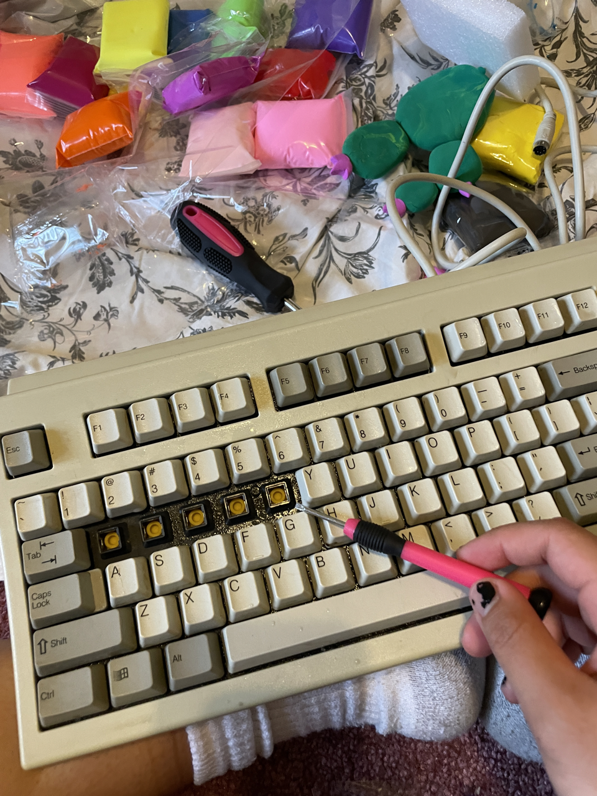

Overview

Dillo Day is Northwestern University’s annual student-run music festival and the largest student-run music festival in the country. The theme for Dillo Day 2022 was Return of the Rodeo, a grand celebration of Dillo Days 50th anniversary and a nod to the Texas roots of the festival's founders. As a native Texan myself (tips cowboy hat), the theme resonated with me, so I applied as a student artist for the Dillo Day art installation and was thrilled to be selected and have the opportunity bring my interpretation of Return of the Rodeo to life.
Ideation
There were main reasons why I applied for this Dillo Day’s art installation, but the main reason was the theme: Return of the Rodeo. Having grown up in Houston, I attended the Houston Livestock Show and Rodeo nearly every year. It was such a common occurrence for me that I never considered that not every state has a rodeo. It was only when I got to college, where I got to interact with people from all over the country and the world, that I realized what an unique experience growing up in Texas was (and how unfamiliar the concept of a rodeo was to most people)!
Thus, for the art installation, I wanted to create something that celebrated the 50th anniversary of Dillo Day as well as highlighted the things I loved most about Texas. I began by listing things that I thought made Texas uniquely, Texas.
I also looked to the description of Return of the Rodeo given by Mayfest Productions, the student org that plans and produces Dillo Day.
Return of the Rodeo is a grand celebration of the past through a contemporary lens. It pulls from the archives to launch our history into the future, merging tradition and innovation: the classic rodeo with the modern music festival. A revitalization of rodeo as we know it, our interpretation captures the electric and vivacious energy of a rodeo and translates it into our color scheme and design. Bold yellows, blues, oranges, and pinks jump out in front of dark, muted backgrounds. Gradients and noise breathe new life into vintage iconography. It's the Return of the Rodeo.
I was really interested in this dichotomy between the classic and the modern; I wanted to make something that combined the classic rodeo and the modern music festival in a way that not only highlighted the differences between the past and the present but also revitalized the past and present.
Construction
I ultimately decided on constructing an image of Texas within a computer monitor. After dealing with a few suspicious sellers on Facebook Marketplace (special shoutout to my friend Cat for driving me around), I obtained an Apple Macintosh, a Micron keyboard, and a Microsoft mouse. I initially wanted to hollow out the monitor but keep leave glass screen intact. That proved harder than expected, so I removed the glass screen along with everything else, leaving just the shell of the monitor.
The next step was to construct the scene within the monitor. I knew I wanted a cowboy to be the center of the scene surrounded by various cacti and rocks. Using air-dry clay and wooden chopsticks, I molded the clay around wooden skeletons. I also recycled styrofoam I already had as the floor of the scene and covering it with a layer of mixed colored clay for that marble effect.
For the keyboard, I removed individual keys and painted over them with acrylic paint before spelling out 'Return of Dillo 50'. I made sure to use 'bold yellows, blues, oranges, and pinks' that contrasted the more muted color of the original keyboard.

Deconstruction
Something I didn’t account for was the weather. I wasn't expecting it to be so rainy on the actual day of Dillo Day, so by the time I set up my piece for the outdoor art installation, the air-dry clay had rehydrated and began to melt. Sometime during the actual music festival, some drunk guy smashed my sculpture. With the roof of the monitor smashed in, more rain got into the sculpture exacerbated the melting :(.
By the time I came back to pick up my piece the following week, my dear cowboy and their horse along with the cacti have succumbed to Mother Nature (and maybe further smashing). The keyboard and mouse were surprisingly intact, so I took those home with me where they currently reside on my shelf :).
 Through it's deconstruction/destruction, Return of the Rodeo becomes a fragment of the past. Yet at the same time, it maintains its existence in the present in other ways — in pictures and memories.
Through it's deconstruction/destruction, Return of the Rodeo becomes a fragment of the past. Yet at the same time, it maintains its existence in the present in other ways — in pictures and memories.
Reflection
So, what does Return of the Rodeo mean? Is it summoning the past to the present, or bring the present to the past? For all that matters, what marks the past and present? I hope Return of the Rodeo can evoke different interpretations depending on one's perspective. It could signify a nostalgic revival of past traditions and experiences, bringing elements of the past into the present. Alternatively, it could symbolize a modern reinterpretation or reimagining of historical themes, where the present is brought into conversation with the past.
The concept of time is complex, and the distinction between past and present can sometimes be blurred. What defines the past and present is often subjective, influenced by individual experiences, memories, and cultural contexts. Something that is classic and vintage to us now was once contemporary and maybe even futuristic. Even the theme Return of the Rodeo suggests that the rodeo is something in the past to evoke. And maybe in some ways, to some people, it is! The rodeo today looked very different from the rodeos of the past, and who knows what it will look like decades, centuries from now.
In essence, Return of the Rodeo embodies the cyclical nature of time, where elements from the past continually resurface and influence the present, and vice versa. Where time stops, and flows again.